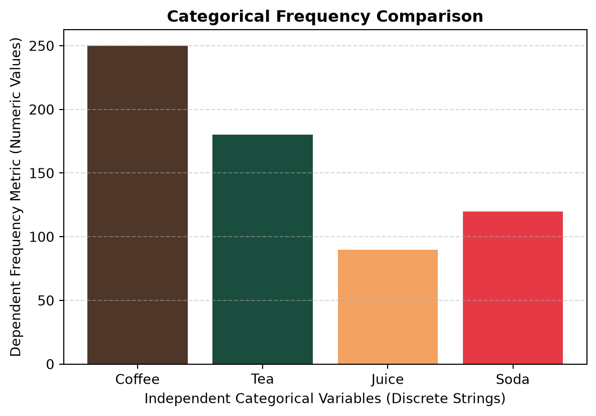
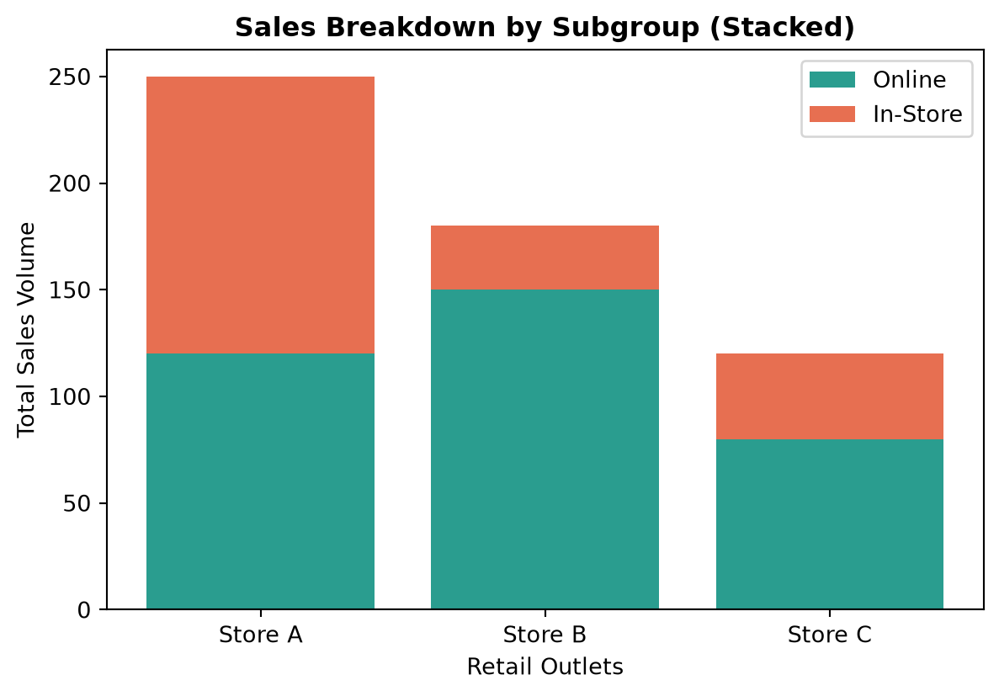
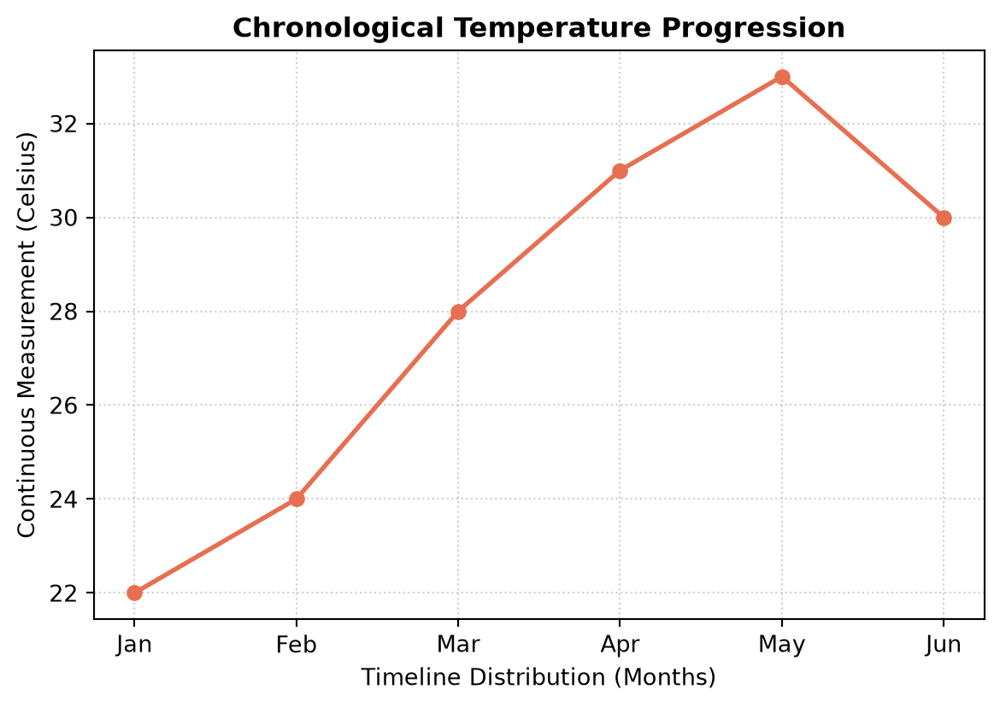
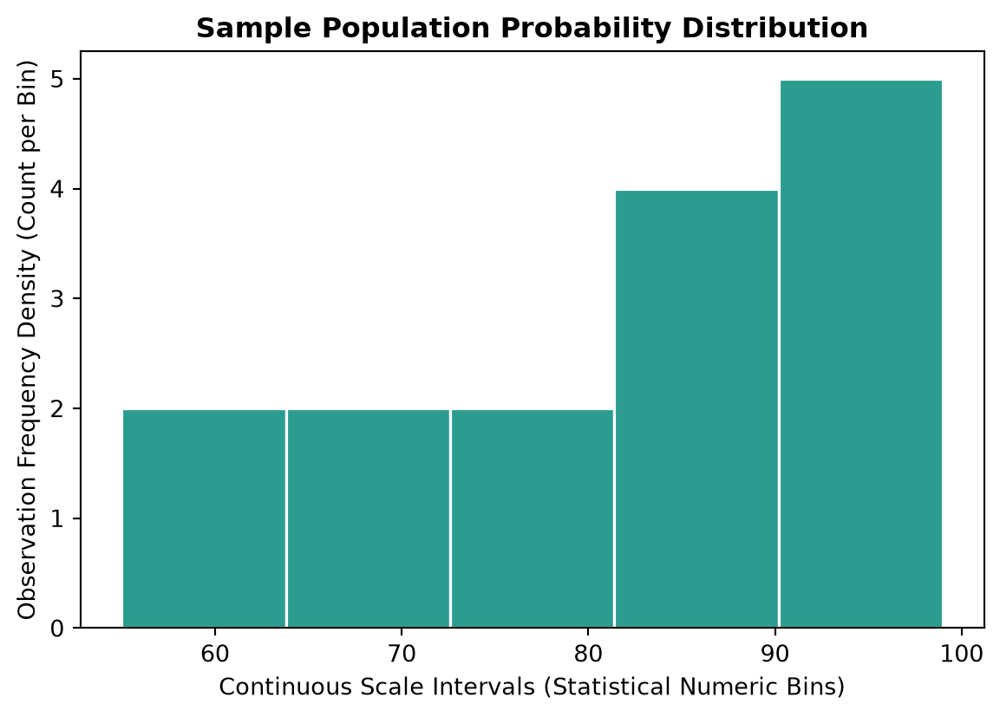
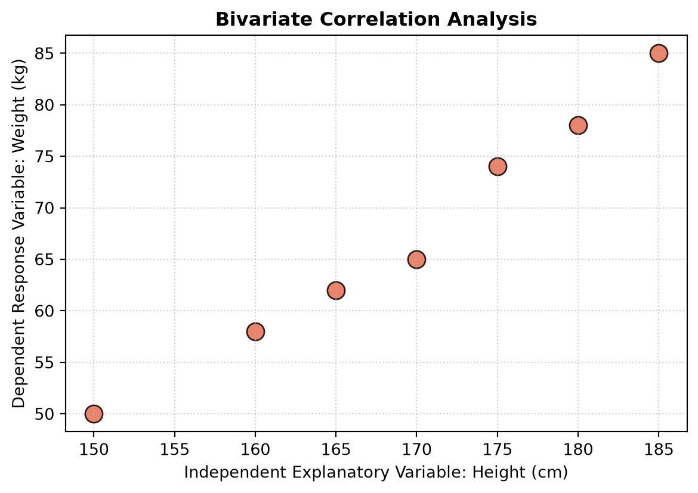
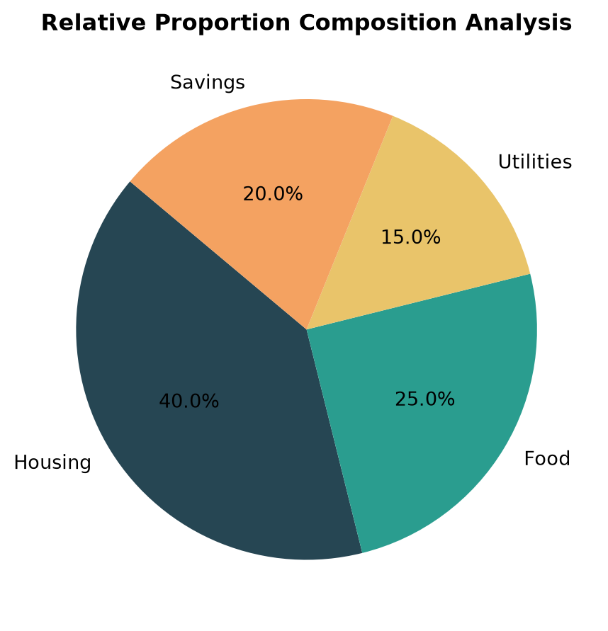

Understanding the Plotting Architecture: R vs. Python
To construct any data visualization, both languages require specific core components, but they organize them using completely different workflows.
The R Approach (ggplot2 Architecture)
R builds plots declaratively by stacking independent components layer-by-layer based on the “Grammar of Graphics”. To draw a plot in R, you must combine three essential elements using the plus sign (+): [ = + + ]
Data: The raw data frame container containing your variables.
Aesthetics Mapping (aes): Tells R which variables map to the visual properties of the graph (e.g., matching a column to the X-axis or Y-axis, or assigning group colors).
Geometric Layer (geom_): Specifies the physical shapes used to draw the data points on the screen (such as geom_col() for bars, geom_histogram() for distributions, or geom_point() for scatter coordinates).
The Python Approach (Matplotlib Architecture)
Python builds plots imperatively using an object-oriented canvas hierarchy. Instead of linking layers, you execute sequential commands top-down to modify a canvas state:
The Figure Container (plt.figure): The physical, blank page windows container holding your entire visual output.
The Axes Coordinate Plane: The specific grid window plane inside the figure box where numbers map to physical X and Y coordinate scales.
The Plotting Engine (plt.bar, plt.hist, etc.): The explicit execution call that stamps your raw data arrays directly onto that coordinate plane.
The Decoration Methods (plt.title, plt.xlabel): Sequential commands that add titles, grid lines, and axis labels before rendering.
Deep Dive: How to Draw Plots in Python
To program visualizations in Python effectively, you must understand how Matplotlib tracks and updates your drawing canvas. Matplotlib offers two primary interfaces for compiling graphics.
1. The Imperative State-Machine Interface (pyplot)
This shortcut interface relies on the global pyplot tracking engine to manage an active, hidden “current state” behind the scenes.
Tracking State: Every time you call a command like plt.bar() or plt.title(), Python asks: “Which figure layout is currently open?” It automatically applies that operation to the active window wrapper.
The Step-by-Step State Lifecycle:
Step A: Call plt.figure() to instantiate and register a clean global canvas state.
Step B: Invoke your rendering engine (e.g., plt.hist()). Python automatically draws the axis grid limits based on your list variables.
Step C: Call mutation methods (plt.xlabel(), plt.grid()). These alter the details of the active state.
Step D: Invoke plt.show(). This flushes the background graphics memory buffer and locks the visual state to display the completed figure.
2. The Object-Oriented Interface (Explicit Canvas Mapping)
For advanced, production-grade applications, developers drop the hidden global state and explicitly capture the individual layout elements as named Python objects.
Instead of hiding the canvas behind the plt wrapper, you explicitly decouple the container window from the interior tracking grid using plt.subplots():
# Unpacking the figure box object and coordinate grid object explicitlyfig, ax = plt.subplots(figsize=(7, 4.5))# Calling rendering commands directly as object methodsax.scatter(student_heights, student_weights)# Mutating properties explicitly on the coordinate axis objectax.set_title("Bivariate Correlation Analysis")ax.set_xlabel("Independent Variable: Height (cm)")
By transitioning to object methods like ax.set_xlabel(), you gain low-level, absolute programmatic control over every standalone element on your data dashboard grid layout.
Let’s move on to some practical examples of these statistical plots.
Standard Bar Charts
Statistical Application
Bar charts compare the central tendency (such as sample means) or raw frequencies across discrete categorical variables.
Python Syntax Focus
The Engine: plt.bar(x, height) maps index positions. Python loops over the categorical iterable to assign text labels along the X-axis, while mapping numeric values to column heights on the Y-axis.
Common Trap: Both input sequences must have identical lengths, or Python will throw a ValueError: Incompatible shapes runtime error.
import matplotlib.pyplot as plt# Statistics: Discrete Categorical Variable (Independent Groupings)beverages = ['Coffee', 'Tea', 'Juice', 'Soda']# Statistics: Absolute Frequency Distribution (Dependent Numeric Variable)units_sold = [250, 180, 90, 120]# Initialization: Instantiating a clean figure containerplt.figure(figsize=(7, 4.5))# Execution: Passing mandatory positional variables to the rendering engineplt.bar(beverages, units_sold, color=['#4E3629', '#1B4D3E', '#F4A261', '#E63946'])# Decoration: Adding statistical metadata and labelsplt.title('Categorical Frequency Comparison', fontsize=12, fontweight='bold')plt.xlabel('Independent Categorical Variables (Discrete Strings)')plt.ylabel('Dependent Frequency Metric (Numeric Values)')plt.grid(axis='y', linestyle='--', alpha=0.5)plt.show()

Stacked Bar Charts
Statistical Application
Stacked bar charts compare the total frequency of major groups while simultaneously displaying the proportional breakdown of subgroups within each category.
Python Syntax Focus
The Engine: bottom=vector keyword argument. To stack bars, you call plt.bar() multiple times. The second call must explicitly receive the values of the first call as its baseline starting point.
import matplotlib.pyplot as pltcategories = ['Store A', 'Store B', 'Store C']online_sales = [120, 150, 80]instore_sales = [130, 30, 40]plt.figure(figsize=(7, 4.5))# Plot baseline layerplt.bar(categories, online_sales, label='Online', color='#2A9D8F')# Plot second layer stacked directly on top of the baseline layerplt.bar(categories, instore_sales, bottom=online_sales, label='In-Store', color='#E76F51')plt.title('Sales Breakdown by Subgroup (Stacked)', fontsize=12, fontweight='bold')plt.xlabel('Retail Outlets')plt.ylabel('Total Sales Volume')plt.legend()plt.show()

Clustered Bar Charts
Statistical Application
Clustered bar charts place related subgroups side-by-side. This makes it easier to directly compare values across multiple subcategories without looking at an absolute total.
Python Syntax Focus
The Engine: Vector offset mathematics using NumPy. Python requires you to shift the X-coordinates of each subgroup manually using a defined pixel width value.
import matplotlib.pyplot as pltimport numpy as npcategories = ['Q1', 'Q2', 'Q3', 'Q4']year_2024 = [45, 58, 62, 79]year_2025 = [52, 64, 61, 85]# Generate a continuous tracking array for indicesx_indices = np.arange(len(categories))bar_width =0.35plt.figure(figsize=(7, 4.5))# Subtract and add half-width to center clusters perfectly around x ticksplt.bar(x_indices - bar_width/2, year_2024, width=bar_width, label='2024', color='#264653')plt.bar(x_indices + bar_width/2, year_2025, width=bar_width, label='2025', color='#F4A261')plt.title('Quarterly Revenue Growth (Clustered)', fontsize=12, fontweight='bold')
Line charts trace the movement and directional trends of continuous variables across a sequential scale, traditionally measured over chronological time intervals.
Python Syntax Focus
The Engine: plt.plot(x, y) tracks and maps elements using continuous line segments. The optional marker parameter allows you to emphasize exact observation coordinates.
import matplotlib.pyplot as plt# Chronological intervals (Months) and continuous observationsmonths = ['Jan', 'Feb', 'Mar', 'Apr', 'May', 'Jun']temperature = [22, 24, 28, 31, 33, 30]plt.figure(figsize=(7, 4.5))# marker='o' flags exact coordinate indices with solid data pointsplt.plot(months, temperature, color='#E76F51', linestyle='-', marker='o', linewidth=2)plt.title('Chronological Temperature Progression', fontsize=12, fontweight='bold')plt.xlabel('Timeline Distribution (Months)')plt.ylabel('Continuous Measurement (Celsius)')plt.grid(True, linestyle=':', alpha=0.6)plt.show()

Histograms
Statistical Application
Histograms visualize the empirical probability distribution, sample spread, skewness, and modality of a single continuous numerical dataset.
Python Syntax Focus
The Engine: Unlike bar charts, plt.hist(x) accepts only one data array. Python’s backend automatically sweeps the data, locates the range minimum and maximum, and builds mathematical intervals.
Key Argument: The bins parameter accepts an integer to slice the data range into equal-width buckets automatically.
import matplotlib.pyplot as plt# Statistics: A single unorganized sample distribution of a continuous numeric variableexam_scores = [55, 62, 67, 71, 74, 78, 82, 85, 88, 90, 91, 93, 95, 97, 99]# Initialization: Open a fresh distinct chart window contextplt.figure(figsize=(7, 4.5))# Execution: 'bins=5' makes Python calculate ranges and divide data automaticallyplt.hist(exam_scores, bins=5, color='#2A9D8F', edgecolor='white', linewidth=1.2)# Decoration: Apply tracking documentation metrics to continuous axis layoutplt.title('Sample Population Probability Distribution', fontsize=12, fontweight='bold')plt.xlabel('Continuous Scale Intervals (Statistical Numeric Bins)')plt.ylabel('Observation Frequency Density (Count per Bin)')plt.show()

Box Plots
Statistical Application
Box plots visualize the dispersion, spread, symmetry, and central tendency of a dataset by mapping its Five-Number Summary: Minimum, First Quartile (\(Q_1\)), Median (\(Q_2\)), Third Quartile (\(Q_3\)), and Maximum, while explicitly flagging individual outliers.
Python Syntax Focus
The Engine: plt.boxplot(x) runs background percentile calculations automatically. The box marks the Interquartile Range (IQR), the inner line represents the median, and the outer whiskers extend to \(1.5 \times \text{IQR}\).
Scatter plots diagnose the direction, strength, and structural pattern of the correlation between two paired continuous variables.
Python Syntax Focus
The Engine: plt.scatter(x, y) takes matched vector pairings. It extracts index elements x[i] and y[i] simultaneously to plot exact spatial points on a Cartesian matrix.
Key Argument: The alpha parameter regulates pixel transparency. Setting it below 1.0 helps expose data overplotting, allowing users to visually spot high-density clusters.
import matplotlib.pyplot as plt# Statistics: Two paired continuous numerical measurements for correlation mappingstudent_heights = [150, 160, 165, 170, 175, 180, 185]student_weights = [50, 58, 62, 65, 74, 78, 85]# Initialization: Set up clear dimensional window propertiesplt.figure(figsize=(7, 4.5))# Execution: 's' changes marker pixels; 'alpha' adds transparency to map dense data clustersplt.scatter(student_heights, student_weights, color='#E76F51', s=120, edgecolors='black', alpha=0.85)# Decoration: Decorate matrix with statistical reference gridsplt.title('Bivariate Correlation Analysis', fontsize=12, fontweight='bold')plt.xlabel('Independent Explanatory Variable: Height (cm)')plt.ylabel('Dependent Response Variable: Weight (kg)')plt.grid(True, linestyle=':', alpha=0.6)plt.show()

Pie Charts
Statistical Application
Pie charts show relative frequencies and part-to-whole nominal percentages. They should only be used when individual subcategories total exactly 100%.
Python Syntax Focus
The Engine: plt.pie(x) computes metrics automatically. Python sums the data list internally, determines each item’s relative fraction, and slices the 360-degree radius to match.
Key Argument: autopct='%1.1f%%' uses standard Python formatting string tokens to process and inject float percentage text labels right onto the graphic slices.
import matplotlib.pyplot as plt# Statistics: Categorical nominal groups and their proportional value segmentsbudget_categories = ['Housing', 'Food', 'Utilities', 'Savings']allocation_values = [40, 25, 15, 20]# Initialization: Enforce 1:1 aspect ratio constraint to ensure a perfect circle shapeplt.figure(figsize=(5.5, 5.5))# Execution: 'autopct' uses native string formatting tokens to render percentages inlineplt.pie(allocation_values, labels=budget_categories, autopct='%1.1f%%', startangle=140, colors=['#264653', '#2A9D8F', '#E9C46A', '#F4A261'])# Decoration: Render structural layout elementsplt.title('Relative Proportion Composition Analysis', fontsize=12, fontweight='bold')plt.show()

Quick Reference Summary Table
Graph Model
Matplotlib Function
Core Statistical Purpose
Input Data Requirements
Standard Bar Chart
plt.bar(x, height)
Compares frequency counters across nominal groups
Two matched 1D arrays (Strings + Numbers)
Stacked Bar Chart
plt.bar(x, height, bottom)
Compares cumulative metrics while highlighting inner composition
Multiple numeric data vectors of equal length
Clustered Bar Chart
plt.bar(x_indices +/- offset, y)
Side-by-side group comparison without stacking tracking
NumPy sequence tracking keys + numeric series data
Line Chart
plt.plot(x, y)
Traces trends over continuous chronological scales
One sequential tracking key list + one numerical metric array
Histogram
plt.hist(x, bins)
Examines density shape and distribution skewness
One single continuous numerical array
Box Plot
plt.boxplot(x)
Maps five-number summary quartiles and flags extreme outliers